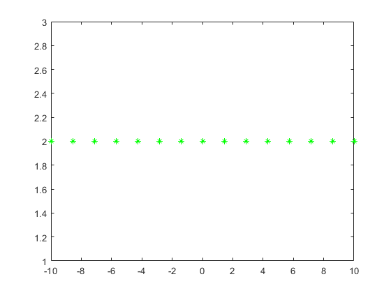

Problem #0.22
By: Ian Doarn Class: EECE 3203
syms t x = (1 + 1j*t)^2; real_x = real(x) imaginary_x = imag(x) % nothing happens when x is plotted with fplot fplot(x); % this gives the following error: % Error using plot % Data must be numeric, datetime, duration or an array convertible to double. % plot(x); deriv = diff(x) real_deriv = real(deriv) imag_deriv = imag(deriv) fplot(real_deriv, imag_deriv, 'g*') x2 = @(T) (1 + 1j*T).^2; int_x = integral(x2, 0, 1) conj_x = @(T) conj((1 + 1j*T).^2); int_conj_x = integral(conj_x, 0, 1) if real(int_x) == real(int_conj_x) disp('True, int_x == int_conj_x') end
real_x = real((1 + t*1i)^2) imaginary_x = imag((1 + t*1i)^2) deriv = - 2*t + 2i real_deriv = -2*real(t) imag_deriv = 2 - 2*imag(t) int_x = 0.6667 + 1.0000i int_conj_x = 0.6667 - 1.0000i True, int_x == int_conj_x